Cookie、Session、Token 背后的故事
1. 网站交互体验升级
作为网友的我们，每天都会使用浏览器来逛各种网站，来满足日常的工作生活需求。 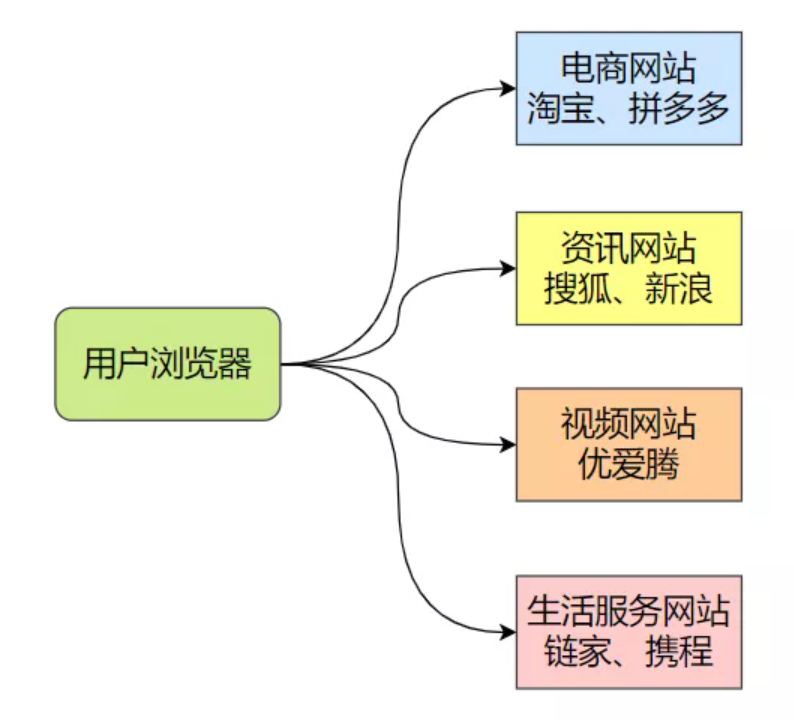 现在的交互体验还是很丝滑的，但早期并非如此，而是一锤子买卖。
1.1 无状态的 http 协议
无状态的 http 协议是什么鬼？ HTTP 无状态协议，是指协议对于业务处理没有记忆能力，之前做了啥完全记不住，每次请求都是完全独立互不影响的，没有任何上下文信息。 缺少状态意味着如果后续处理需要前面的信息，则它必须重传关键信息，这样可能导致每次连接传送的数据量增大。 如果大家没明白，可以想一下《夏洛特烦恼》里面的桥段： 大概明白了吧，假如一直用这种原生无状态的 http 协议，我们每换一个页面可能就得重新登录一次。 所以必须要解决 http 协议的无状态，提升网站的交互体验，否则星辰大海是去不了的。
1.2 解决之道
整个事情交互的双方只有客户端和服务端，所以必然要在这两个当事者身上下手。
客户端来买单
客户端每次请求时把自己必要的信息封装发送给服务端，服务端查收处理一下就行。 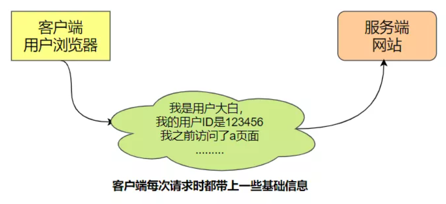
服务端来买单
客户端第一次请求之后，服务端就开始做记录，然后客户端在后续请求中只需要将最基本最少的信息发过来就行，不需要太多信息了。 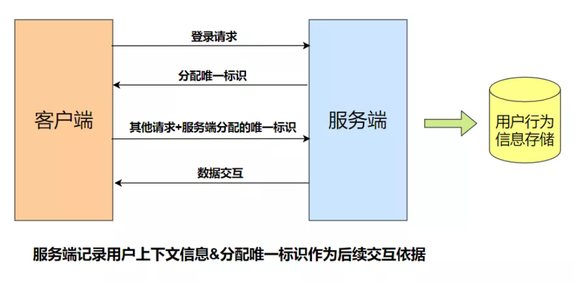
2.Cookie 方案
Cookie 总是保存在客户端中，按在客户端中的存储位置，可分为内存 Cookie 和硬盘 Cookie。内存 Cookie 由浏览器维护，保存在内存中，浏览器关闭后就消失了，其存在时间是短暂的；硬盘 Cookie 保存在硬盘里，有一个过期时间，除非用户手工清理或到了过期时间，硬盘 Cookie 不会被删除，其存在时间是长期的。 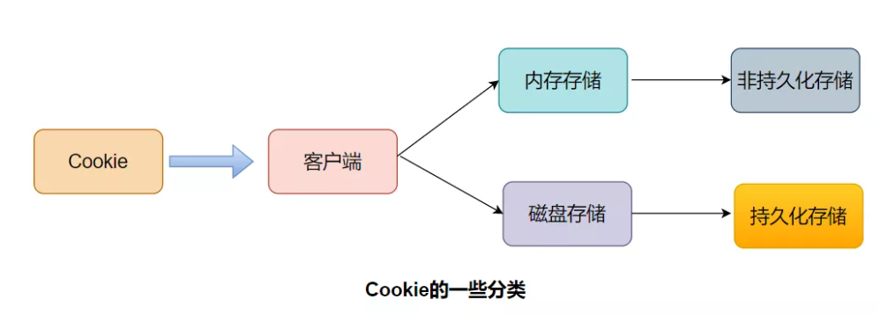
2.1 Cookie 定义和作用
HTTP Cookie（也叫 Web Cookie 或浏览器 Cookie）是服务器发送到用户浏览器并保存在本地的一小块数据，它会在浏览器下次向同一服务器再发起请求时被携带并发送到服务器上。 通常 Cookie 用于告知服务端两个请求是否来自同一浏览器，如保持用户的登录状态。Cookie 使基于无状态的 HTTP 协议记录稳定的状态信息成为了可能。 Cookie 主要用于以下三个方面：
- 会话状态管理（如用户登录状态、购物车等其它需要记录的信息）；
- 个性化设置（如用户自定义设置、主题等）；
- 浏览器行为跟踪（如跟踪分析用户行为等）。
2.2 服务端创建 Cookie
当服务器收到 HTTP 请求时，服务器可以在响应头里面添加一个 Set-Cookie 选项。
浏览器收到响应后通常会保存下 Cookie，之后对该服务器每一次请求都通过 Cookie 请求头部将 Cookie 信息发送给服务器。另外，Cookie 的过期时间、域、路径、有效期、适用站点都可以根据需要来指定。 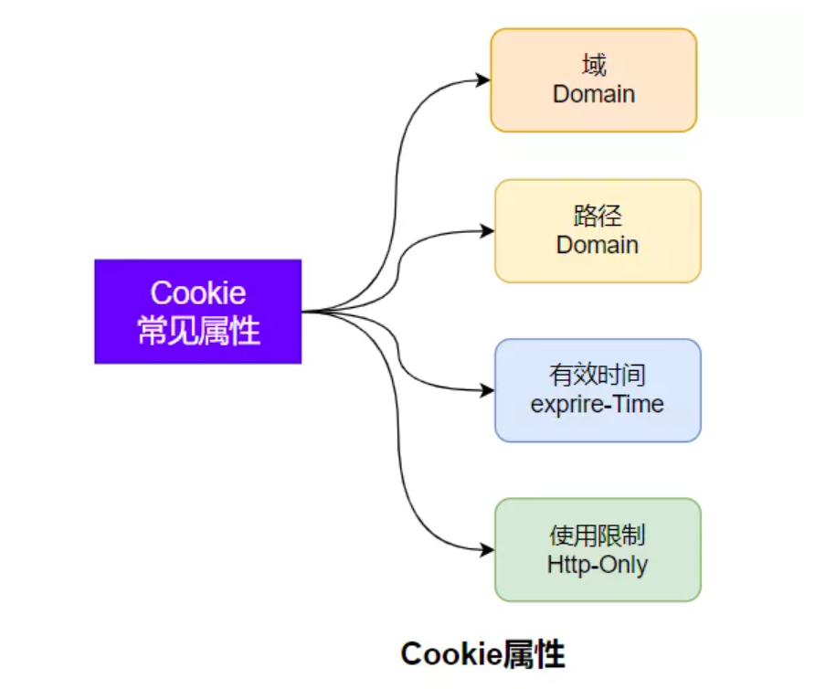
2.3 B/S 的 Cookie 交互
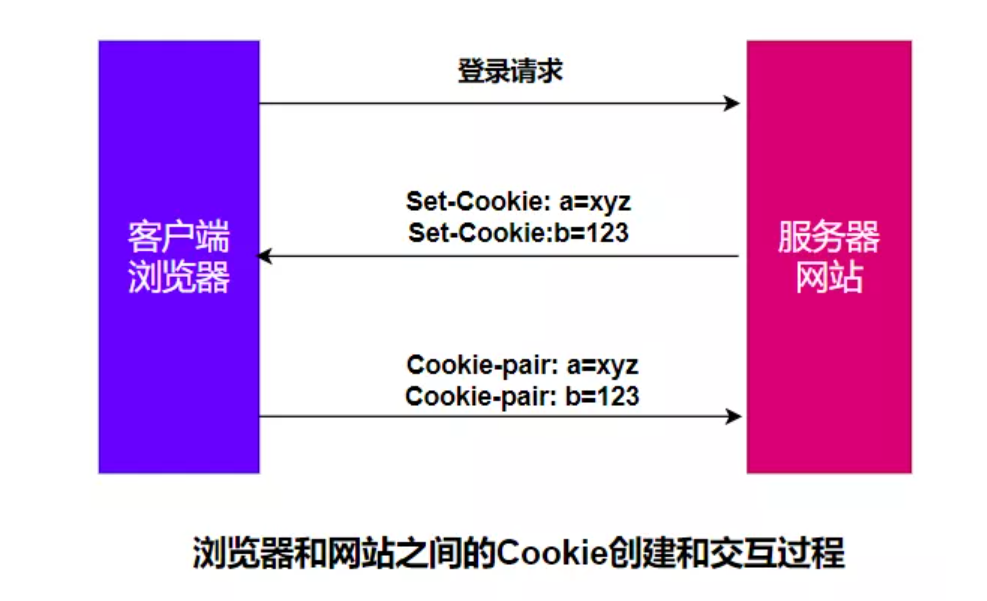 服务器使用 Set-Cookie 响应头部向用户浏览器发送 Cookie 信息。
一个简单的 Cookie 可能像这样：
Set-Cookie: <cookie名>=<cookie值>
HTTP/1.0 200 OK
Content-type: text/html
Set-Cookie: yummy_cookie=choco
Set-Cookie: tasty_cookie=strawberry
客户端对该服务器发起的每一次新请求，浏览器都会将之前保存的 Cookie 信息通过 Cookie 请求头部再发送给服务器。
GET /sample_page.html HTTP/1.1
Host: www.example.org
Cookie: yummy_cookie=choco; tasty_cookie=strawberry
我来访问下淘宝网，抓个包看看这个真实的过程： 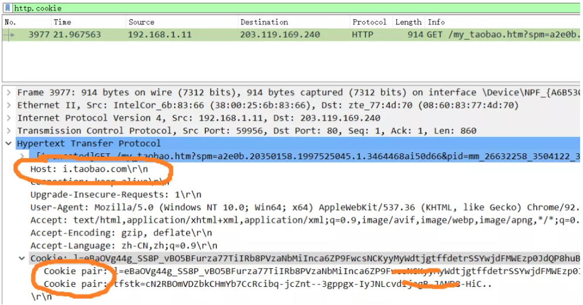
2.4 存在的问题
Cookie 常用来标记用户或授权会话，被浏览器发出之后可能被劫持，被用于非法行为，可能导致授权用户的会话受到攻击，因此存在安全问题。
还有一种情况就是跨站请求伪造 CSRF，简单来说，比如你在登录银行网站的同时，登录了一个钓鱼网站，在钓鱼网站进行某些操作时可能会获取银行网站相关的 Cookie 信息，向银行网站发起转账等非法行为。
跨站请求伪造（英语：Cross-site request forgery），也被称为 one-click attack 或者 session riding，通常缩写为 CSRF 或者 XSRF， 是一种挟制用户在当前已登录的 Web 应用程序上执行非本意的操作的攻击方法。 跨站请求攻击（XSS），简单地说，是攻击者通过一些技术手段欺骗用户的浏览器去访问一个自己曾经认证过的网站并运行一些操作（如发邮件、发消息，甚至财产操作如转账和购买商品）。由于浏览器曾经认证过，所以被访问的网站会认为是真正的用户操作而去运行。这利用了 web 中用户身份验证的一个漏洞：简单的身份验证只能保证请求发自某个用户的浏览器，却不能保证请求本身是用户自愿发出的。 与跨网站脚本（XSS）相比，XSS 利用的是用户对指定网站的信任，CSRF 利用的是网站对用户网页浏览器的信任。
不过这种情况有很多解决方法，特别对于银行这类金融性质的站点，用户的任何敏感操作都需要确认，并且敏感信息的 Cookie 只能拥有较短的生命周期。
同时 Cookie 有容量和数量的限制，每次都要发送很多信息带来额外的流量消耗、复杂的行为 Cookie 无法满足要求。 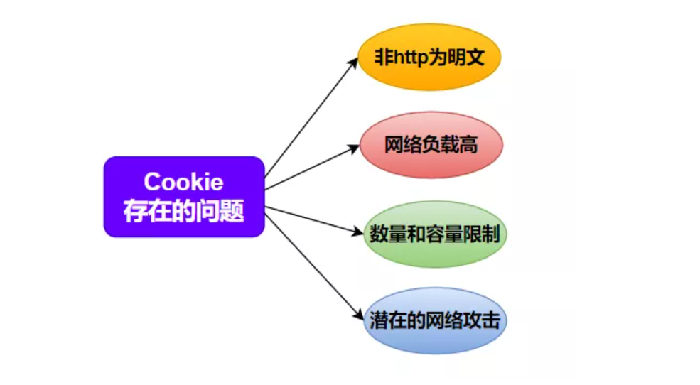 特别注意：以上存在的问题只是 Cookie 被用于实现交互状态时存在的问题，但并不是说 Cookie 本身的问题。
试想一下：菜刀可以用来做菜，也可以被用来从事某些暴力行为，你能说菜刀应该被废除吗？
3. Session 方案
3.1 Session 机制的概念
如果说 Cookie 是客户端行为，那么 Session 就是服务端行为。 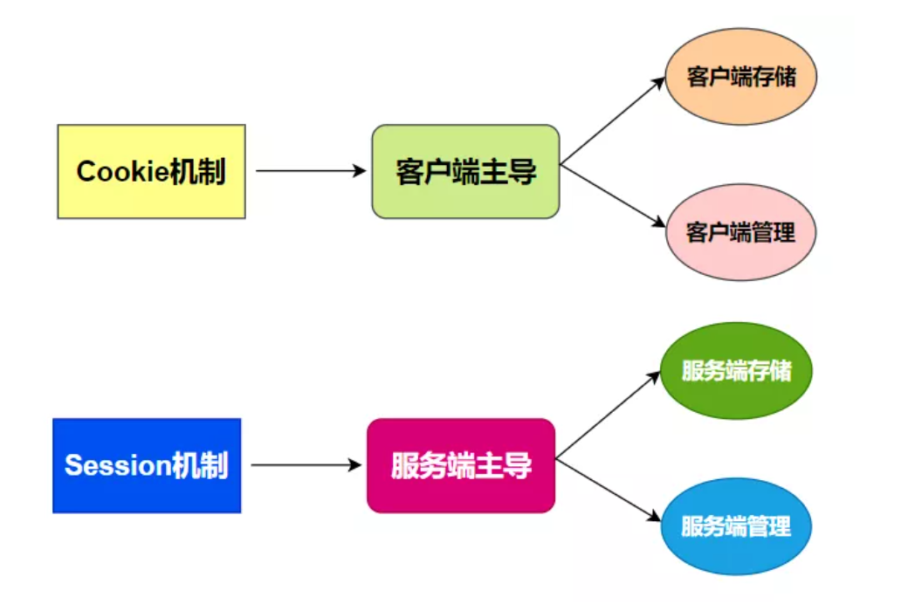 Cookie 机制在最初和服务端完成交互后，保持状态所需的信息都将存储在客户端，后续直接读取发送给服务端进行交互。
Session 代表服务器与浏览器的一次会话过程，并且完全由服务端掌控，实现分配 ID、会话信息存储、会话检索等功能。
Session 机制将用户的所有活动信息、上下文信息、登录信息等都存储在服务端，只是生成一个唯一标识 ID 发送给客户端，后续的交互将没有重复的用户信息传输，取而代之的是唯一标识 ID，暂且称之为 Session-ID 吧。
3.2 简单的交互流程
- 当客户端第一次请求 session 对象时候，服务器会为客户端创建一个 session，并将通过特殊算法算出一个 session 的 ID，用来标识该 session 对象。
- 当浏览器下次请求别的资源的时候，浏览器会将 sessionID 放置到请求头中，服务器接收到请求后解析得到 sessionID，服务器找到该 id 的 session 来确定请求方的身份和一些上下文信息。
3.3 Session 的实现方式
首先明确一点，Session 和 Cookie 没有直接的关系，可以认为 Cookie 只是实现 Session 机制的一种方法途径而已，没有 Cookie 还可以用别的方法。
Session 和 Cookie 的关系就像加班和加班费的关系，看似关系很密切，实际上没啥关系。
session 的实现主要两种方式：cookie 与 url 重写，而 cookie 是首选方式，因为各种现代浏览器都默认开通 cookie 功能，但是每种浏览器也都有允许 cookie 失效的设置，因此对于 Session 机制来说还需要一个备胎。 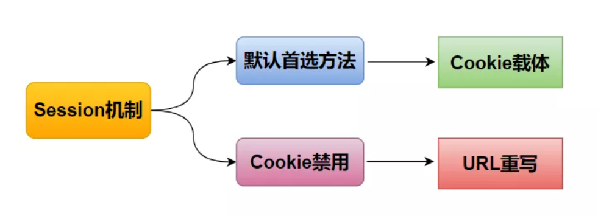 将会话标识号以参数形式附加在超链接 URL 地址后面的技术称为 URL 重写。
原始的 URL：
http://taobao.com/getitem?name=baymax&action=buy
重写后的 URL:
http://taobao.com/getitem?sessionid=1wui87htentg&?name=baymax&action=buy
3.4 存在的问题
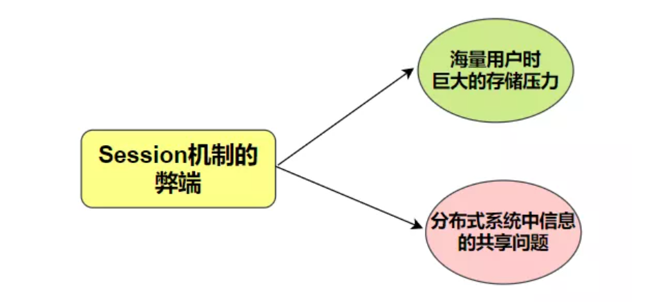 由于 Session 信息是存储在服务端的，因此如果用户量很大的场景，Session 信息占用的空间就不容忽视。
对于大型网站必然是集群化&分布式的服务器配置，如果 Session 信息是存储在本地的，那么由于负载均衡的作用，原来请求机器 A 并且存储了 Session 信息，下一次请求可能到了机器 B，此时机器 B 上并没有 Session 信息。
这种情况下要么在 B 机器重复创建造成浪费，要么引入高可用的 Session 集群方案，引入 Session 代理实现信息共享，要么实现定制化哈希到集群 A，这样做其实就有些复杂了。 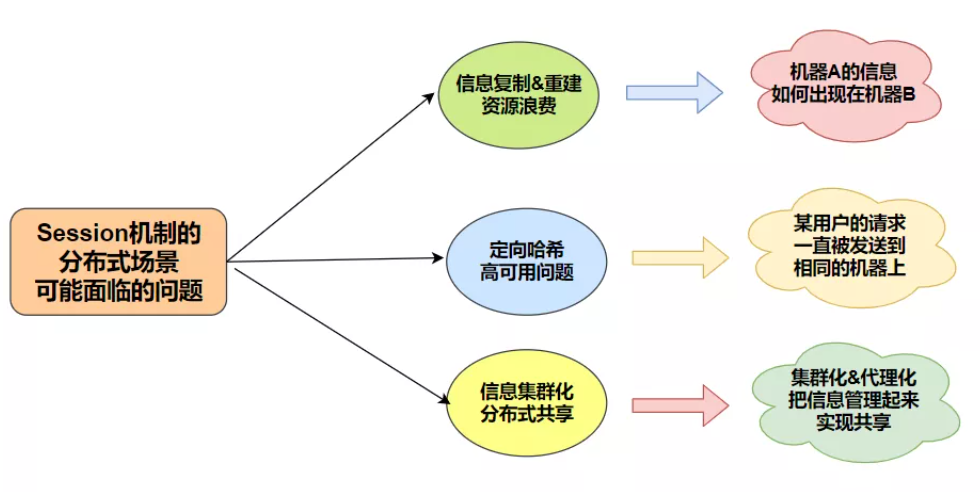
4. Token 方案
Token 是令牌的意思，由服务端生成并发放给客户端，是一种具有时效性的验证身份的手段。
Token 避免了 Session 机制带来的海量信息存储问题，也避免了 Cookie 机制的一些安全性问题，在现代移动互联网、跨域访问等场景有广泛的用途。
4.1 简单的交互流程
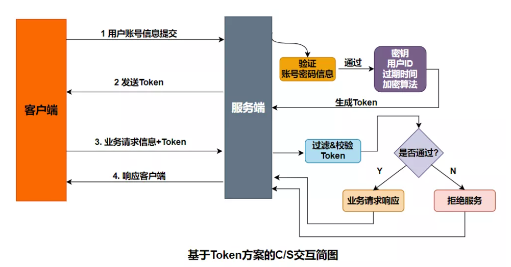
- 客户端将用户的账号和密码提交给服务器；
- 服务器对其进行校验，通过则生成一个 token 值返回给客户端，作为后续的请求交互身份令牌；
- 客户端拿到服务端返回的 token 值后，可将其保存在本地，以后每次请求服务器时都携带该 token，提交给服务器进行身份校验；
- 服务器接收到请求后，解析关键信息，再根据相同的加密算法、密钥、用户参数生成 sign 与客户端的 sign 进行对比，一致则通过，否则拒绝服务；
- 验证通过之后，服务端就可以根据该 Token 中的 uid 获取对应的用户信息，进行业务请求的响应。
4.2 Token 的设计思想
以 JSON Web Token（JWT）为例，Token 主要由 3 部分组成：
- Header 头部信息 记录了使用的加密算法信息；
- Payload 净荷信息 记录了用户信息和过期时间等；
- Signature 签名信息 根据 header 中的加密算法和 payload 中的用户信息以及密钥 key 来生成，是验证服务端的重要依据。
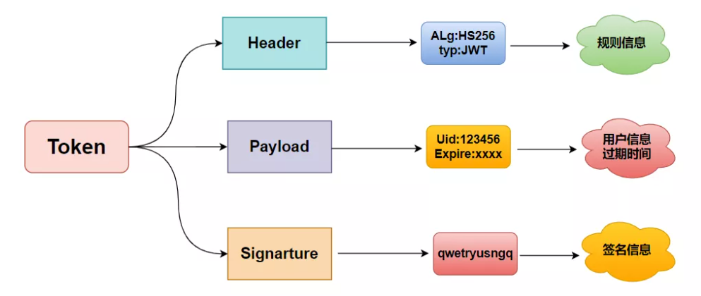
header 和 payload 的信息不做加密，只做一般的 base64 编码，服务端收到 token 后，剥离出 header 和 payload 获取算法、用户、过期时间等信息，然后根据自己的加密密钥来生成 sign，并与客户端传来的 sign 进行一致性对比，来确定客户端的身份合法性。
这样就实现了用 CPU 加解密的时间换取存储空间，同时服务端密钥的重要性就显而易见，一旦泄露整个机制就崩塌了，这个时候就需要考虑 HTTPS 了。
4.3 Token 方案的特点
- Token 可以跨站共享，实现单点登录；
- Token 机制无需太多存储空间，Token 包含了用户的信息，只需在客户端存储状态信息即可，对于服务端的扩展性很好；
- Token 机制的安全性依赖于服务端加密算法和密钥的安全性；
- Token 机制也不是万金油。
5.总结
Cookie、Session、Token 这三者是不同发展阶段的产物，并且各有优缺点，三者也没有明显的对立关系，反而常常结伴出现，这也是容易被混淆的原因。
Cookie 侧重于信息的存储，主要是客户端行为，Session 和 Token 侧重于身份验证，主要是服务端行为。
三者方案在很多场景都还有生命力，了解场景才能选择合适的方案，没有银弹。